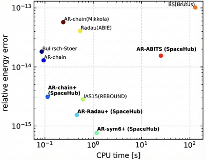

Biography
┌──────────────────────────────────────┐ │ ~/research $ cat about.md │ └──────────────────────────────────────┘
I am a Postdoctoral Research Associate in the Department of Astronomy at the University of Wisconsin-Madison, working with Nick Stone. Previously, I was a Fellow at the Nevada Center for Astrophysics at UNLV, collaborating with Bing Zhang and Zhaohuan Zhu. I completed my PhD at Stony Brook University under Rosalba Perna.
My research establishes a unified framework of disk-regulated cluster dynamics to understand the coupled evolution of AGN disks and stellar populations in galactic nuclei. This paradigm connects a diverse class of nuclear transients and gravitational wave sources: tidal disruption events, changing-look AGN, quasi-periodic eruptions, extreme mass-ratio inspirals, and binary black hole mergers detectable by LIGO and LISA. I develop hard-core open-source simulation tools including SpaceHub for few-body dynamics and VegasAfterglow for gamma-ray burst afterglow modeling.
I hate spaghetti code and am a bit stubborn about elegant problem solutions, which wastes a lot of my time.
// EOF
Download my CV .
- nuclei-cluster-dynamics/
├── Tidal disruption events
├── Changing-look AGN
├── Quasi-periodic eruptions
└── Extreme mass ratio inspirals - multi-messenger-astrophysics/
- free-floating-planets/
-
PhD in Physics, 2022
Stony Brook University
-
MA in Physics, 2017
Stony Brook University
-
BS in Physics (Theoretical Physics), 2015
University of Science and Technology of China
SpaceHub
SpaceHub is a state-of-the-art gravitational dynamics framework designed to solve challenging few-body problems with exceptional precision and efficiency. From supermassive black hole binaries to planetary system evolution, SpaceHub handles extreme scenarios, including large mass ratios, highly eccentric orbits, and close gravitational encounters that often challenge conventional numerical integrators. Built with advanced algorithmic regularization and rigorous round-off error control, it enables reliable long-term integrations where standard codes like REBOUND may struggle with numerical accuracy.
RK4 (irreversible)

Symplectic (reversible)

Fork SpaceHub Github Repository

VegasAfterglow
VegasAfterglow is a high-performance computational framework for gamma-ray burst afterglow modeling, combining C++ efficiency with Python accessibility. Unlike existing tools such as afterglowpy, VegasAfterglow generates light curves in milliseconds, enabling rapid MCMC parameter inference that would otherwise be computationally prohibitive. The framework also offers more comprehensive physics, including reverse shock emission, synchrotron self-Compton, and flexible jet structures for multi-wavelength afterglow analysis:
Shock Dynamics:
- Forward and reverse shock modeling across relativistic and non-relativistic regimes
- Adiabatic and radiative blast wave solutions
- Support for various ambient medium types with energy and mass injection
Jet Structure & Geometry:
- Structured jet profiles with arbitrary viewing angles
- Jet spreading dynamics and non-axisymmetric structures
- Complex geometric configurations for realistic modeling
Radiation Mechanisms:
- Synchrotron radiation with self-absorption (SSA)
- Inverse Compton scattering including synchrotron self-Compton (SSC)
- Pairwise IC between shock populations with Klein-Nishina corrections
Read the paper: JHEAp, 5, 100490 (2026)

GitHub Repository Install via PyPI
Selected First/Lead Author Publications
Large Collaboration Publications
Talks
Recent Invited Talks & Presentations
talks/
├── 2024/
│ ├── Transient Phenomena and Physical Processes Around SMBHs (invited) — Oct
│ ├── 50 years of Binaries and Disks: Lubow@75 — Apr
│ └── Anticipating the Rising Tide of TDEs, KITP — Apr
├── 2023/
│ ├── Graduate Seminar, Nanjing University (invited) — Jun
│ ├── AGN Santafe Conference, Los Alamos National Lab (invited) — Mar
│ ├── Graduate Seminar, Stony Brook University (invited) — Feb
│ ├── Astro-coffee, IAS, Princeton University (invited) — Feb
│ └── Bahcall lunch talk, IAS, Princeton University (invited) — Feb
├── 2022/
│ ├── Graduate Seminar, Georgia Institute of Technology (invited) — Sep
│ └── 53rd Annual DDA Meeting, CCA, Flatiron Institute — Apr
├── 2021/
│ ├── Astrophysics seminar, Univ. Balearic Islands (invited) — Oct
│ ├── Planet formation group meeting, CCA, Flatiron Institute — Oct
│ ├── Astronomy Seminar, Universidad de Concepción (invited) — Sep
│ ├── Astronomy Seminar, Stony Brook University — Aug
│ └── Compact Object Group meeting, CCA, Flatiron Institute — Mar
└── 2018/
├── Astronomy Seminar, American Museum of Natural History — Aug
└── Astronomy Group meeting, Cornell University (invited) — Jun
Teaching & Mentoring
Teaching
courses/ ├── AST-203 Astronomy Spring 2019 ├── AST-248 Search for Life in the Universe Fall 2018 ├── PHY-134 Classical Physics Lab II Spring 2018 ├── AST-205 Introduction to Planetary Sciences Fall 2017 └── E&M Electromagnetism (USTC) Fall 2014
Mentoring
students/
├── graduate/
│ ├── Connery Chen UNLV 2023 – present
│ ├── Chaitanya Prasad Stony Brook 2022 – 2023
│ └── Michael Ray Stony Brook 2021 – 2022
└── undergraduate/
├── Antonio Frigo Stony Brook 2021
└── Robert Serrano Stony Brook 2019 – 2020
Research Highlights
Galactic Center Black Hole Merger
Our Milky Way’s central black hole, Sagittarius A*, shows a peculiar spin orientation misaligned with the Galactic plane. We proposed that this misalignment is evidence of a past merger with another massive black hole roughly 9 billion years ago. This work provides a new window into the assembly history of supermassive black holes.
Published in Nature Astronomy (2024). Featured in Phys.org and ScienceDaily.
Stellar Dynamics in AGN Disks
Star-disk coupling in Active Galactic Nuclei fundamentally reshapes nuclear cluster evolution. Objects on retrograde, high-inclination orbits experience eccentricity excitation as their vertical motion is damped. Once flattened, eccentricity is suppressed, leading to prograde, near-circular disk orbits. This process breaks steady-state assumptions and has wide-reaching consequences for tidal disruption events, changing-look AGN, and gravitational wave sources.
Published in MNRAS (2024).
Jupiter Mass Binary Objects (JuMBOs)
JWST discovered Jupiter-Mass Binary Objects in the Orion Nebula—pairs of planetary-mass objects orbiting each other while floating freely in space. Using N-body simulations, we showed that close stellar flybys can eject two planets that remain gravitationally bound.
JuMBO formation: face-on (left) and edge-on (right) scattering.
Published in Nature Astronomy (2024). Featured in Quanta Magazine and Physics World.
In the News
press/ ├── 2024/ │ ├── "Evidence of a Past Merger of the Galactic Center Black Hole" │ │ ├── CBC — "A cosmic collision 9 billion years ago..." │ │ ├── Phys.org — "Massive merger: Study reveals evidence..." │ │ └── ScienceDaily │ │ │ └── "Floating Binary Planets from Stellar Encounters" │ ├── Quanta Magazine — "Rogue Worlds Throw Planetary Ideas Out of Orbit" │ └── Physics World — "Pairs of rogue planets found wandering..." │ └── 2020/ └── "A Planet Could Have Been Stolen from the Solar System" └── New Scientist
Personal
Drawing
I grew up in Chongqing, a city known for its dramatic mountainous terrain and traditional Chinese architecture in southwest China. I enjoy sketching the city’s iconic sites like Hongya Dong, which reflects both its cultural heritage and its striking urban landscape.

I recently revisited this sketch and used Google Gemini to add color and detail:
Skiing
I picked up skiing during my PhD and quickly got hooked despite an early encounter with ski patrol. What started as a new challenge became a regular pursuit where steady improvement kept me coming back.
I’ve been training toward CSIA Level III certification, drawn to their systematic approach to skill development. Below is a clip from a pre-pandemic ski season with friends. I’m the one in the yellow pants.
Prospective Students
┌──────────────────────────────────────┐ │ ~/group $ cat openings.md │ └──────────────────────────────────────┘
I am building a research group at the intersection of gravitational dynamics, high-energy astrophysics, and theoretical/computational physics. Whether you prefer deriving things on a whiteboard or running simulations on a supercomputer — there’s a place for you here.
Research Themes
research/
├── agn-disk-dynamics/
│ ├── Stellar capture and migration in AGN disks
│ ├── Disk-mediated binary formation
│ └── Population evolution in nuclear clusters
├── nuclear-transients/
│ ├── Tidal disruption events
│ ├── Changing-look AGN
│ └── Quasi-periodic eruptions
├── gravitational-waves/
│ ├── Extreme mass-ratio inspirals
│ └── Binary black hole mergers (LIGO/LISA)
└── computational-tools/
├── SpaceHub — few-body dynamics
├── VegasAfterglow — GRB afterglow modeling
└── New projects — open to ideas
The Group
This is a group where physical intuition comes first — whether that leads to a blackboard derivation or a large-scale simulation. You’ll work on projects spanning analytical theory, semi-analytic modeling, and numerical simulations, with access to HPC resources, state-of-the-art AI tools, and funding for conference travel. We are members of the Einstein Probe (EP) and SVOM collaborations, which means real observational data to connect with your theory. I mentor hands-on and aim to build an environment where ideas are discussed openly and curiosity is taken seriously.
A Good Fit
You don’t need prior expertise in my specific topics — a strong physics foundation and genuine curiosity are what matter most. If you’re comfortable with mathematical derivations, interested in how extreme astrophysical environments work, and eager to develop skills in analytical theory, numerical methods, or both — you’ll do well here.
How to Reach Out
If you’re interested, send me an email at yihan.astro@gmail.com with:
- A brief description of your background and interests
- Your CV or transcript
- (Optional) Any work you’re proud of — a derivation, a simulation, a code project, or a paper you enjoyed reading
// Positions available for PhD students, Master's students, and undergraduates. // Visiting students and postdocs are also welcome to inquire.
Contact
- wang3697@wisc.edu
- 500 Lincoln Dr, Madison, WI 53706